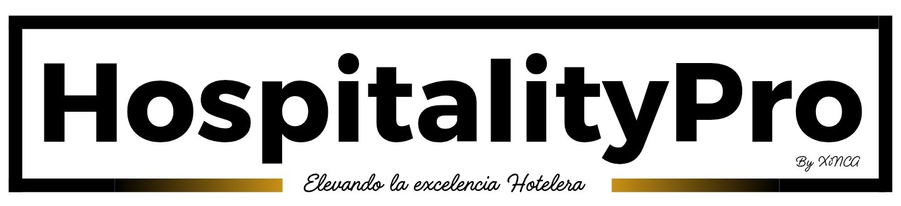
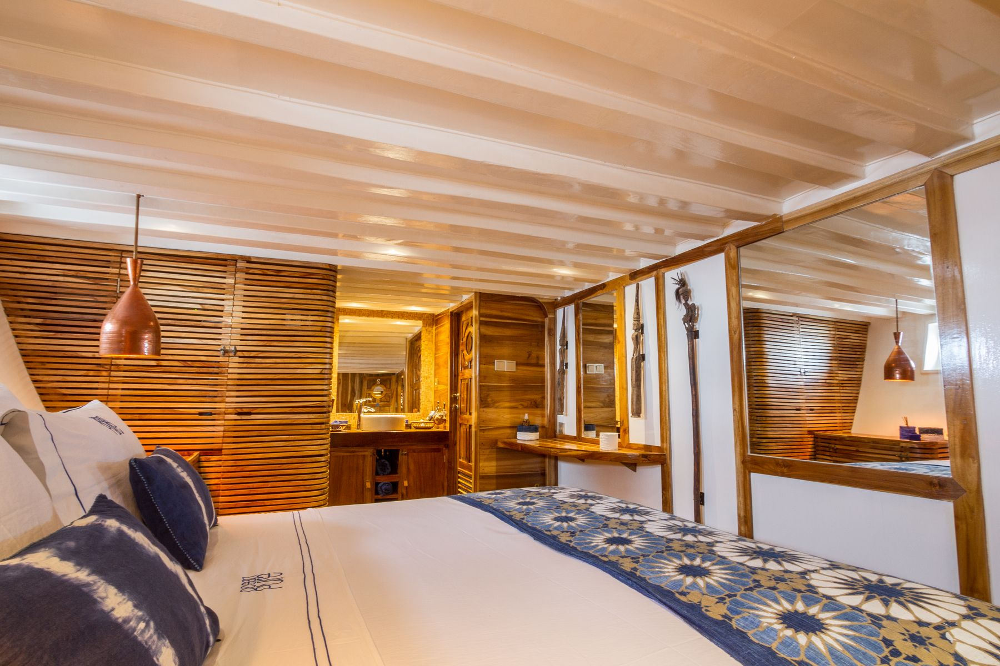
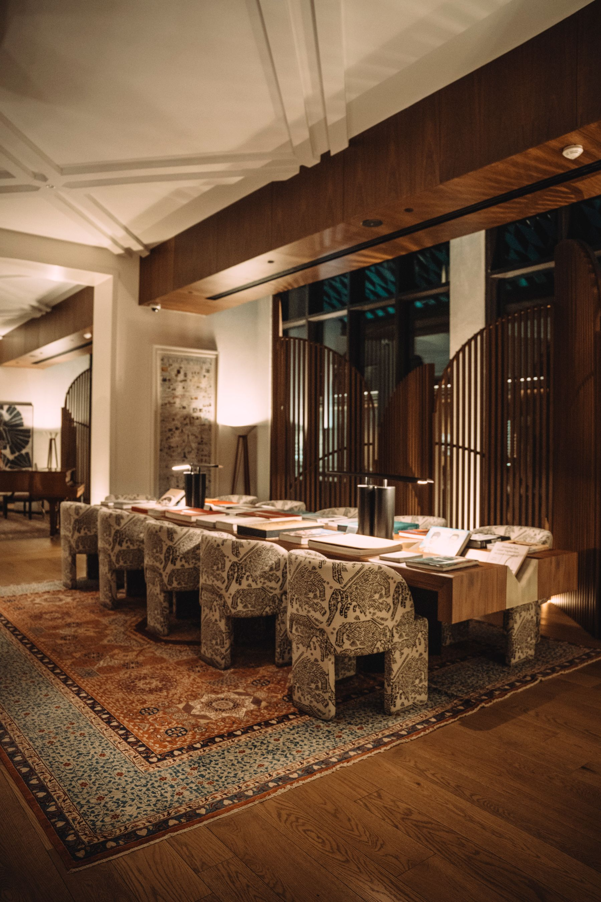

Operaciones impecables
Creamos procesos ágiles que eliminan fricciones y mejoran la experiencia de tu huésped.

Agenda un diagnósticoEstrategia hotelera · México & Centroamérica
En HospitalityPro dejamos de apagar incendios operativos para diseñar el ecosistema perfecto en el que tu marca destaque, escale y perdure.
Operaciones impecables.
Experiencias que permanecen.
Nuestra promesa
Consultoría de alto nivel
Sabemos que dirigir un hotel boutique o una empresa de servicios de alto nivel es un reto constante. Por eso, nuestro enfoque holístico va más allá de la consultoría tradicional.
Creamos estrategias a medida que blindan tu operación y potencian tu esencia. No solo diagnosticamos: construimos sistemas claros para que la experiencia de tu marca pueda repetirse, medirse y crecer.
Creamos procesos ágiles que eliminan fricciones y mejoran la experiencia de tu huésped.
Establecemos protocolos de gestión de riesgos para proteger tu inversión y reputación.
Potenciamos el ADN de tu marca para competir por valor y lealtad, no solo por precio.
Soluciones
Un sistema, cinco frentes
No reinventes la rueda. Apóyate en las metodologías que ya están generando resultados en los hoteles más exitosos del país.
Identifica vulnerabilidades operativas y financieras antes de que impacten tu rentabilidad.
Acelera tu implementación con nuestras guías operativas, diseñadas con las mejores prácticas de la industria.
Estandariza la excelencia. Asegura que la promesa de tu marca se cumpla en cada interacción con el huésped.
Eleva el estándar de tu servicio con programas de formación diseñados específicamente para la hotelería boutique.
También ofrecemos servicios de diseño de páginas web para hoteles, restaurantes y marcas turísticas: sitios claros, actuales y enfocados en comunicar su esencia y convertir visitas en oportunidades.

Sistema propietario
En HospitalityPro presentamos COMPÁS, una solución integral diseñada para transformar la operación de tu hotel boutique. Olvídate de la incertidumbre y da la bienvenida a la estandarización, la calidad y la toma de decisiones basada en datos.
El resultado: más control, menos incertidumbre y decisiones basadas en datos.
Descubre COMPÁSQuiénes somos
Origen de HospitalityPro
HospitalityPro comenzó como Xinca Consultoría en 1998 y, hoy en día, se reinventa con la misma pasión por la hospitalidad mexicana y un firme compromiso con la excelencia en el servicio en hoteles boutique de lujo y cadenas hoteleras.
Nuestro equipo de consultores cuenta con una vasta experiencia en la industria hotelera y corporativa. Nos enorgullece ofrecer capacitación y consultoría de alta calidad en operación hotelera, gestión de riesgos, gestión de calidad y nuestro programa de Desarrollo Personal y Profesional.
Potenciar la excelencia de hoteles boutique y resorts mediante consultoría y capacitación de clase mundial, impulsando su rentabilidad y creando experiencias extraordinarias para cada huésped.
Ser la consultora referente en hospitalidad boutique de Latinoamérica, reconocida por transformar hoteles en destinos de clase mundial donde la excelencia operativa y la experiencia del huésped son inseparables.
Estándares superiores que se traduzcan en satisfacción del huésped y mejoras operativas tangibles.
Conocimiento profundo de hoteles boutique, restaurantes y spas.
Estrategias creativas, fáciles de implementar y sostenibles en el tiempo.
Ética, transparencia y relaciones de confianza a largo plazo.
Consultoría flexible para los desafíos, cultura y objetivos de cada equipo.
Academia HospitalityPro
Ofrecemos capacitación registrada ante la STPS, diseñada estratégicamente en áreas clave como servicio al cliente, liderazgo, gestión de quejas y cultura de calidad.
También desarrollamos cursos a la medida, con contenidos prácticos, aplicables desde el primer día y orientados a generar impacto real en la experiencia del huésped y en la eficiencia interna de la operación.

Preguntas frecuentes
Antes de comenzar
Capacitación registrada ante la STPS en servicio al cliente, liderazgo, gestión de quejas, cultura de calidad, gestión de riesgos y mejora continua. También desarrollamos cursos a la medida para cada establecimiento.
Principalmente para hoteles boutique en la República Mexicana y Centroamérica que buscan estandarizar sus operaciones, mejorar la calidad del servicio al huésped y liberar tiempo de sus propietarios.
Una evaluación exhaustiva de la operación, identificación de vulnerabilidades y un plan de acción personalizado con estrategias efectivas de mitigación y mejora.
Sí. Cada operación es única; ajustamos la consultoría y la capacitación a sus desafíos, cultura, objetivos y realidad operativa.
El siguiente nivel comienza aquí
Contáctanos para más información sobre nuestros servicios de capacitación y consultoría.
Hablemos por WhatsAppCancún, Quintana Roo
México
Lunes — Viernes
9:00 — 18:00